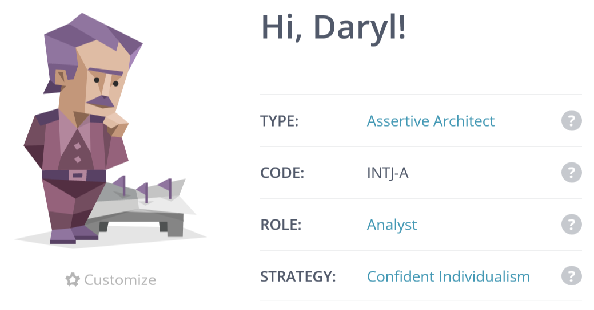
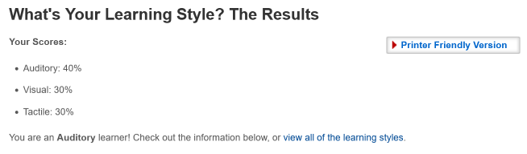
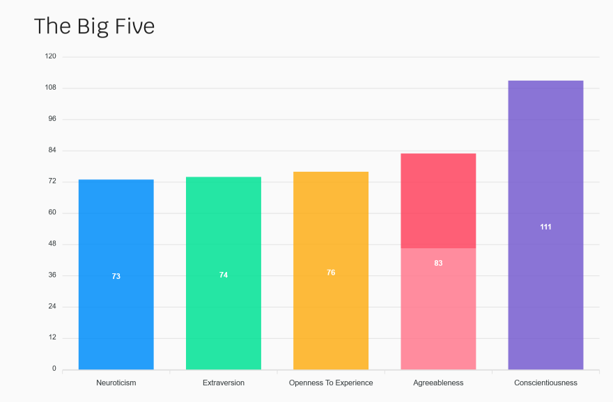

Important Note - Marc had left the team during the final week and had decided to remove all of his
content, so we are unable to show what work he has done.
Click on an individual below to learn about them, their ideal job, and project idea
Adam Profile
My name is Adam Saleh, my student number is S3940024. My hobbies include playing video games
(Assassin’s Creed, Skyrim, Dragon Ball XenoVerse, Halo, Sonic), watching movies (Expendables,
Terminator, Rocky, The Mummy, Spiderman), tv shows (The Flash, Big Bang Theory, Futurama,
Simpsons, One Piece), and abridged series (SAO Abridged, DBZ Abridged, Yu-Gi-Oh Abridged).
I’ve done pixel art for a few months and started trying out blender (I made a list of hotkeys)
because I'm interested in design as a hobby. The IT jobs I'm most interested in are software
development and game development.
My interest In IT is mainly in programming, machine learning, robots, and the potential of
artificial intelligence, however my skills and experience are very little. I started IT last
year with the Cert III in IT with Tafe. After the Cert III, came the Cert IV in Programming
which taught someone who couldn’t even display “hello world” C#, SQL, HTML, CSS, and JS . I
taught myself a little bit of Python (Py game) and Java (J Frame) before starting this course.
My Myers-Briggs personality is the ISTP-T Turbulent Virtuoso, this personality type is
described as rationalized, curious, and creators, they prefer pulling things apart to put
them back together, usually better than it was before. They are known as friendly, private,
curious, overhasty and practically realistic. An ISTP’s strengths include being optimistic,
energetic, creative, practical, spontaneous, rational, prioritisation, composed, and excellent
at handling a crisis. Their weaknesses include being stubborn, insensitive, private, easily
bored, disliking commitment, and risky behaviour.
The learning style best suited to me is the pragmatist style, a style that learns best from
practical, case studies, problem setting, and discussions. A pragmatist is keen to try out
ideas/theories to see if they work, search new ideas, and take the first opportunity to test
an application. My secondary learning style, of the same score (0.250), is the reflector style,
this style learns best with paired discussions, self-analysis questionnaires, demonstrations,
feedback, and coaching. The reflector style of learning is more about observing, data gathering
and analysing than it is the practical approach.
The two workstyle tests I’ve done have indicated that I am an “integrator” and an organised
planner. An integrator’s preferred roles are problem-solving and diagnostics with a strong
preference for understanding the why of what’s being done. They are known to be self-reliant
and prefer the “plan-first” approach. The second of the tests that I’ve done indicates that my
preferred way of work is to organize and plan my work, which, as proven by working with this
team, is where my strengths lie.
For iTeam, a name I support, I should be able to help organize the work that needs to be done,
come up with creative solutions or ideas, prioritise my duties based on time and importance,
try out software that is new to me without hesitation, create creative code for the project,
and, if need be, I will discuss our course of actions if I do not agree with them. This doesn’t
mean I don’t have my weaknesses though, everyone does. As I’ve learnt from the tests I’ve done,
and personal experience, my weaknesses within iTeam might just include leaving important but
boring tasks until the end, an approach to explanations that lack a practical containing less
than ideal memorisations, and getting my tasks done early on and expecting most, if not all,
to take a similar approach.
Career Plan
Adam - Career Plan
Daryl Profile
My name is Daryl (s395200), I was born in Brisbane QLD, but I grew up in Parkes NSW, a small town
with a population of around 15,000. I have three brothers and two sisters. I played rugby union during
my high school years. I left school once I completed year 10 in 2004 to join the Australian Defence
Force, Army -Infantry 1st Battalion. I was 17 when I joined and 18 on my first deployment to the
Solomon Islands in 2006, then at 19 I was deployed to Afghanistan in 2007. I like to play chess,
go fishing/camping, and spend time with my wife and two daughters. I like to watch movies and
TV series, some of my favourite movies include American sniper, black hawk down and many others.
Popular tv series I like are Vikings, the unit and game of thrones. I liked to play D& D but don’t
have the time anymore to play.
My test outcome for the Myers Brigs personality type was Architect INTJ-A. The architect's personality
type is outlined as a private individual, who thinks before they act. My strengths include being
Introverted, Intuitive, thinking, judging and assertive, these results are accurate to me.
My weakness would be playing well with others but over the years I have learned to control the
situation so I can work in teams well.
My Learning style test outcomes, Auditory: 40% Visual: 30% Tactile: 30%. This test shows me that
I am an auditory learner and I need to listen more and sit at the front of the classroom.
I am interested in robotics and A.I (Artificial Intelligence) the most, but really, I am interested
in all technology and how it works and what I can learn and do to help others with the skills and
knowledge I will gain during and after my studies.
I used the basic technology when growing up but did not really get interested in it until I was
in the Army. This is where I started to get interested in it, I learnt communications and encryptions
on military radios, which was the starting point of my interest. From that point, I started to teach
myself through books and videos. Once I left the army I dropped out of interest for a little bit
because of my PTSD (Post Traumatic Stress Disorder). When I meet my wife, I started to feel a
little bit normal again and started back on my quest to learn which became even better because
my new father-in-law was good with technology, he helped me learn to build computers. I have
worked with technology for a few years now from building computers to installing software.
I have had to use excel, outlook, Microsoft Word, and teams in my role as Stock Controller.
Iteam is an excellent choice of name and a good group of bright and intelligent people, and I feel
like we all work together well so far.



Career Plan
Daryl - Career Plan
Jay Profile
My name is Jay Meredith, my student number is S3951987. My passions are Game Design, 3D art,
and music. I have a Game Design Certificate from JMC Academy, and I also hold a Certificate
III in Retail. My favourite hobby aside from the three I have previously mentioned was being
the leader of a competitive Counter-Strike team. I backed the idea for the team name ‘iTeam’
because I like the technology theme that is incorporated into the name.
The Myers-Briggs Personality Type Test gave me the INTJ-T personality type. This personality
type indicates that my strengths are logical thinking, intuition, and determination. It also
indicates that my weaknesses are arrogance, over-criticism, and dismission of emotions. My
strengths are going to provide the group with logical problem solving, confidence in decision
making, and motivation. My weaknesses are going to need to be kept in check or we may have
problems with team chemistry and team morale.
The online learning test indicates that I learn based on primarily logic and, learn well in
group environments or in solitude. The test states that my learning weaknesses are physical
learning, and sub-par visual learning. My strengths are going to be helpful to our team
because my logical, adaptable learning style will be great for both solo study and group study. My weaknesses may cause issues if we must learn physically or visually.
The workstyle test that I chose indicates that my strengths are organising and planning,
managing projects, and developing communication strategies. The test also indicates that my
weakness is likely to be an overfocus on the administrative side of working as a team. My
strengths will help us coordinate as a team but, my weakness may result in me playing catch-up
with my teammates.
In conclusion, my strengths will provide the team with a logical thinking decision-maker who
will help our team with administrative skills, determination, and an adaptable learning style.
My weaknesses, on the other hand, may cause issues with team chemistry, learning through
physical or visual mediums, and an overfocus on administrative tasks. With my strengths and
weaknesses considered, I believe I will help this team thrive. To help this team thrive, I
must remember my weaknesses and be constantly aware of them because once they can be suppressed,
I will be a great teammate.
Career Plan
jay - Career Plan
James Profile
My name is James (s3936965), and I have worked as an IT technician for
several years before moving into operations. At present, my hobbies include
3D printing and CNC machining. Something I have always enjoyed is gaming mostly
on console and mobile. I have a good fundamental understanding of IT hardware,
but I have always felt my software understanding could be better. I would love to
develop skills that would allow me to produce mobile apps, but I have recently taken
an interest in machine learning and AI (Artificial Intelligence).
As a member of iTeam, I am looking forward to sharing my skills and expertise and
learning some new ones from fellow team members.
My test outcome for the Myers Brigs personality type was Architect INTJ-A. The architect's
personality type is outlined as a quiet individual who values organisation and rationality,
these values I align with. Individuals with this personality type can be viewed as ambitious
and assertive; however, to work within a small team, I believe it is beneficial to be flexible
and play to the entire team's strengths rather than one individual.
My Learning style test outcomes, Auditory: 15% Visual: 55% Tactile: 30%. This test aligns with
what I know about myself and how I learn. While my auditory percentile might indicate I am not a
good listener, I believe this is more specific to how I can take in new information. I am much
better when I can be shown something rather than told. The refinement of these skills comes from
hands-on experience of the tactile branch of the above outcomes.
My creativity test score was 68.8, a remarkably arbitrary number assigned at the end of a creativity test.
However, within that number were indicated certain aspects of creativity that I was more proficient at, such
as complexity or the ability to take in and manipulate large amounts of data. Paradox, the ability to accept
and work with contradictory statements and curiosity, is the desire to change or improve things that everyone
takes for granted.